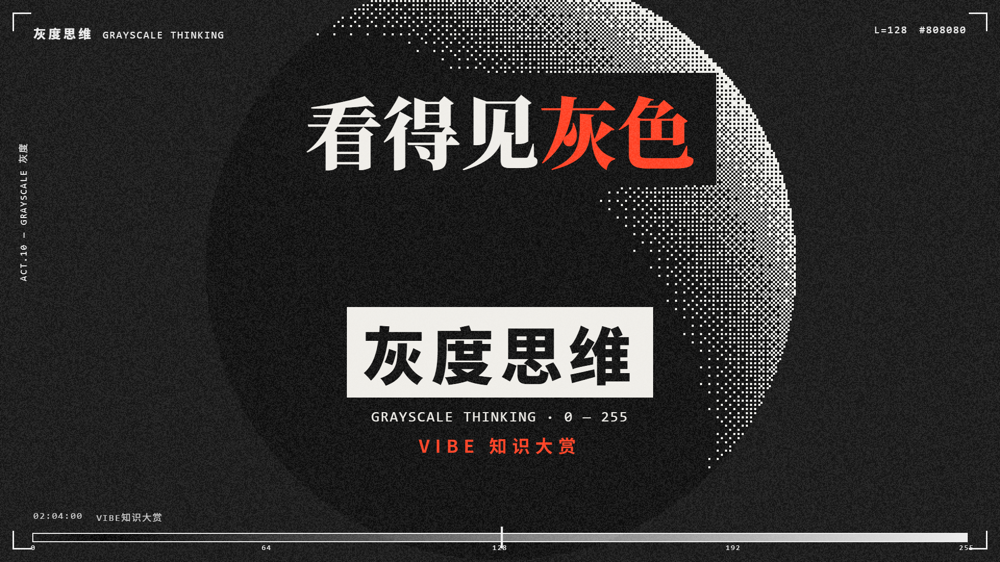
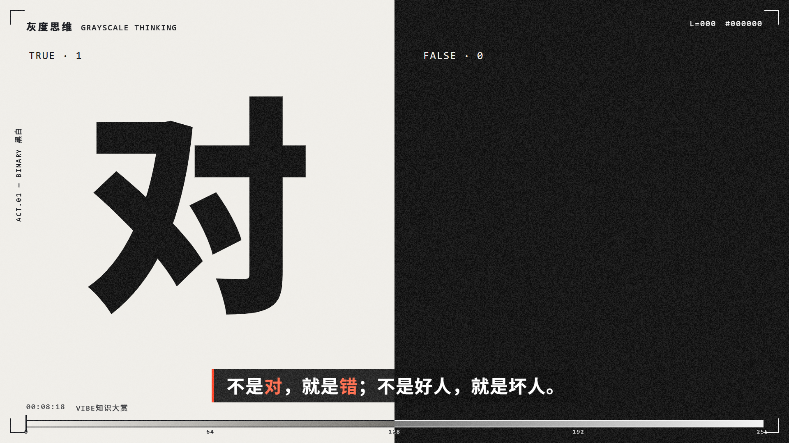
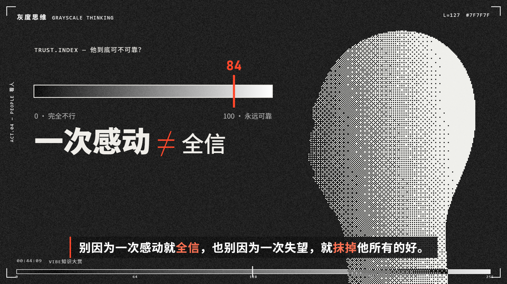
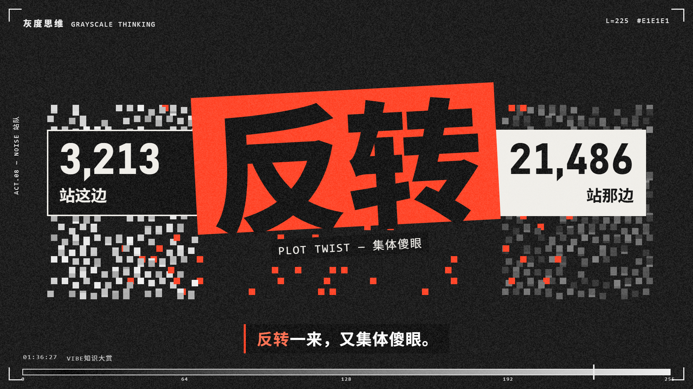

灰度思维
黑白网点塑形，超大文字推进，朱红在转折处爆发。把抽象的判断、对照与关系，做成一张张紧凑的动态海报。

看得见灰色
124s · 网点球体收束全片，红色落在关键判断上。

用版式讲对照
8.6s · 黑与白直接成为二元判断的画面结构。

让关系拥有形体
44.3s · 人物侧影、灰阶刻度与文字共同解释信任；数值为原作示意。

让转折拥有冲击
96.9s · 倾斜红色字块打断黑白秩序，把叙事转折推到视觉前景。